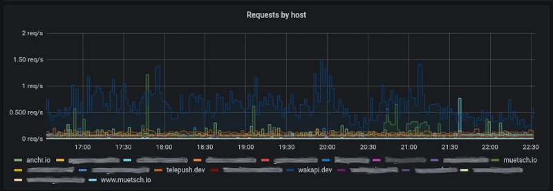

Introduction
Caddy is cool web server and I really like it for how simple and easy it is to use. I’m using it both as a static file server and a reverse proxy for years now (including for service like Wakapi). You could even use it as an API gateway, featuring authentication / authorization, load balancing, etc.
Problem
Who needs Common Log Format anyway?
From version 2.4 to 2.5, the authors removed support for logging requests in Common Log Format (CLF) (here is why). I didn’t really like that decision because, first, what about semantic versioning?! 🤔 And, second, while I see the downsides of CLF, it’s probably still the most widely used format for web server logs and simply dropping that feels a bit drastic. Anyways, after upgrading Caddy, my monitoring broke. I was using grok_exporter (Caddy istself doesn’t support per-host metrics, yet) to read Caddy’s access logs and provide them to Prometheus, which, in turn, was called by Grafana to plot cool-looking dashboard with stats about my web apps.
Solution
Switching to JSON logging
I decided to switch to logging in JSON format instead, because JSON is commonly understood and well supported by all kinds of programs and libraries. My vhosts now look like this:
1 | # /etc/caddy/Caddyfile |
Parsing and exporting logs to Prometheus
This also meant that I had to find a new way of parsing an exporting the logs. Technically, I could have continued using the _grok_exporter_, but writing a regex pattern to extract fields from JSON lines seemed to much of a hassle to me. Instead, I found json-log-exporter, which does exactly what I needed. It takes a list of files in JSON Lines format and exports certain fields as Prometheus metrics, depending on your config / mapping. I came up with this config for the tool:
1 | # /etc/json-log-exporter/json_log_exporter.yml |
SystemD service
I created a simple SystemD service unit to run the exporter in the background:
1 | # /etc/systemd/system/json-log-exporter.service |
Testing it
Running this provides an endpoint at http://localhost:9321/metrics, that exports the metrics defined above. Here’s an example:
1 | jsonlog_caddy_bytes_total{host="wakapi.dev",method="GET",proto="HTTP/2.0",response="200"} 1.6983983e+07# |
Grafana visualization

Using the following query in Grafana, you can plot cool charts showing your requests per seconds across all your sites.
1 | sum(irate(jsonlog_caddy_count_total[5m])) by (host) |